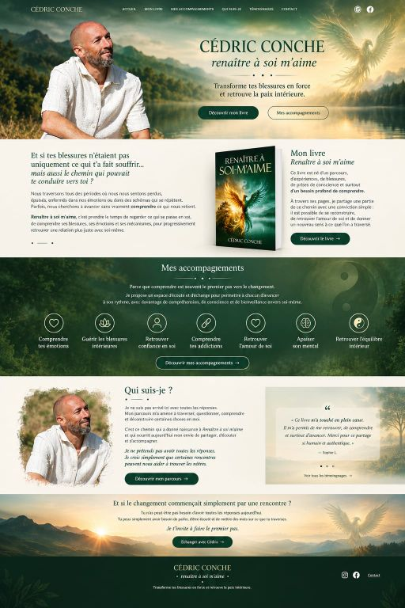

Comprendre tes émotions
Identifier ce qui se joue à l’intérieur et remettre des mots sur ce qui était difficile à exprimer.
En savoir plusRenaître à soi m’aime
Un accompagnement pour comprendre ce qui te traverse, retrouver ton axe et avancer avec plus de paix intérieure.

Une approche humaine
Certaines expériences nous fragilisent. D’autres nous invitent, avec le temps, à nous comprendre autrement.
L’objectif n’est pas d’effacer ce qui a été vécu, mais de remettre du sens, de la conscience et du mouvement là où quelque chose semblait bloqué.
Découvrir la démarcheMes accompagnements
Plusieurs portes d’entrée pour avancer à ton rythme, selon ton histoire et ce que tu souhaites aujourd’hui.
Identifier ce qui se joue à l’intérieur et remettre des mots sur ce qui était difficile à exprimer.
En savoir plusAvancer avec douceur vers ce qui demande à être reconnu, accueilli et transformé.
En savoir plusRevenir à une relation plus stable, plus consciente et plus bienveillante avec soi-même.
En savoir plusObserver les mécanismes qui enferment et retrouver progressivement des choix plus libres.
En savoir plusRecréer un lien plus apaisé avec ton corps, ton histoire et la personne que tu deviens.
En savoir plusSortir du bruit permanent et retrouver davantage de présence, de recul et de clarté.
En savoir plusQui suis-je ?
Je suis Cédric Conche, accompagnant et auteur. Mon rôle est de t’écouter, de t’aider à comprendre ce que tu traverses et de t’accompagner vers davantage de clarté.
Ce chemin demande du temps, de l’honnêteté et parfois du courage. Il ne s’agit pas de suivre une méthode rigide, mais de créer un espace où tu peux avancer à ton rythme.
En savoir plusMon livre
À travers ce livre, je partage des expériences, des réflexions et des pistes pour comprendre ce qui nous éloigne parfois de nous-mêmes.
Un ouvrage pour mettre des mots sur les blessures, retrouver une relation plus juste avec soi et ouvrir un chemin de transformation intérieure.
Découvrir le livreLe chemin ne consiste pas à devenir quelqu’un d’autre, mais à retrouver ce qui, en toi, a toujours été vivant.
Cédric Conche
Premier échange
Tu peux m’écrire pour poser une première question, présenter ta situation ou simplement ouvrir une conversation.
Prendre contact
Je te répondrai avec attention et simplicité.
Envoyer un message